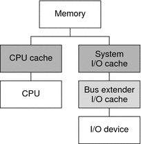

Writing Device Drivers
|
|||||||||
|
Part I Designing Device Drivers for the Solaris Platform 1. Overview of Solaris Device Drivers 2. Solaris Kernel and Device Tree 5. Managing Events and Queueing Tasks 7. Device Access: Programmed I/O DMA Software Components: Handles, Windows, and Cookies 10. Mapping Device and Kernel Memory 14. Layered Driver Interface (LDI) Part II Designing Specific Kinds of Device Drivers 15. Drivers for Character Devices 18. SCSI Host Bus Adapter Drivers 19. Drivers for Network Devices Part III Building a Device Driver 21. Compiling, Loading, Packaging, and Testing Drivers 22. Debugging, Testing, and Tuning Device Drivers 23. Recommended Coding Practices B. Summary of Solaris DDI/DKI Services C. Making a Device Driver 64-Bit Ready |
Managing DMA ResourcesThis section describes how to manage DMA resources. Object LockingBefore allocating the DMA resources for a memory object, the object must be prevented from moving. Otherwise, the system can remove the object from memory while the device is trying to write to that object. A missing object would cause the data transfer to fail and possibly corrupt the system. The process of preventing memory objects from moving during a DMA transfer is known as locking down the object. The following object types do not require explicit locking:
For other objects such as buffers from user space, physio(9F) or ddi_umem_lock(9F) must be used to lock down the objects. Locking down objects with these functions is usually performed in the read(9E) or write(9E) routines of a character device driver. See Data Transfer Methods for an example. Allocating a DMA HandleA DMA handle is an opaque object that is used as a reference to subsequently allocated DMA resources. The DMA handle is usually allocated in the driver's attach() entry point that uses ddi_dma_alloc_handle(9F). The ddi_dma_alloc_handle() function takes the device information that is referred to by dip and the device's DMA attributes described by a ddi_dma_attr(9S) structure as parameters. The ddi_dma_alloc_handle() function has the following syntax: int ddi_dma_alloc_handle(dev_info_t *dip,
ddi_dma_attr_t *attr, int (*callback)(caddr_t),
caddr_t arg, ddi_dma_handle_t *handlep);where:
Allocating DMA ResourcesTwo interfaces allocate DMA resources:
DMA resources are usually allocated in the driver's xxstart() routine, if an xxstart() routine exists. See Asynchronous Data Transfers (Block Drivers) for a discussion of xxstart(). These two interfaces have the following syntax: int ddi_dma_addr_bind_handle(ddi_dma_handle_t handle,
struct as *as, caddr_t addr,
size_t len, uint_t flags, int (*callback)(caddr_t),
caddr_t arg, ddi_dma_cookie_t *cookiep, uint_t *ccountp);
int ddi_dma_buf_bind_handle(ddi_dma_handle_t handle,
struct buf *bp, uint_t flags,
int (*callback)(caddr_t), caddr_t arg,
ddi_dma_cookie_t *cookiep, uint_t *ccountp);The following arguments are common to both ddi_dma_addr_bind_handle(9F) and ddi_dma_buf_bind_handle(9F):
For ddi_dma_addr_bind_handle(9F), the object is described by an address range with the following parameters:
For ddi_dma_buf_bind_handle(9F), the object is described by a buf(9S) structure pointed to by bp. Device Register StructureDMA-capable devices require more registers than were used in the previous examples. The following fields are used in the device register structure to support DMA-capable device with no scatter-gather support: uint32_t dma_addr; /* starting address for DMA */ uint32_t dma_size; /* amount of data to transfer */ The following fields are used in the device register structure to support DMA-capable devices with scatter-gather support: struct sglentry {
uint32_t dma_addr;
uint32_t dma_size;
} sglist[SGLLEN];
caddr_t iopb_addr; /* When written, informs the device of the next */
/* command's parameter block address. */
/* When read after an interrupt, contains */
/* the address of the completed command. */
DMA Callback ExampleIn Example 9-1, xxstart() is used as the callback function. The per-device state structure is used as the argument to xxstart(). The xxstart() function attempts to start the command. If the command cannot be started because resources are not available, xxstart() is scheduled to be called later when resources are available. Because xxstart() is used as a DMA callback, xxstart() must adhere to the following rules, which are imposed on DMA callbacks:
Example 9-1 DMA Callback Examplestatic int
xxstart(caddr_t arg)
{
struct xxstate *xsp = (struct xxstate *)arg;
struct device_reg *regp;
int flags;
mutex_enter(&xsp->mu);
if (xsp->busy) {
/* transfer in progress */
mutex_exit(&xsp->mu);
return (DDI_DMA_CALLBACK_RUNOUT);
}
xsp->busy = 1;
regp = xsp->regp;
if ( /* transfer is a read */ ) {
flags = DDI_DMA_READ;
} else {
flags = DDI_DMA_WRITE;
}
mutex_exit(&xsp->mu);
if (ddi_dma_buf_bind_handle(xsp->handle,xsp->bp,flags, xxstart,
(caddr_t)xsp, &cookie, &ccount) != DDI_DMA_MAPPED) {
/* really should check all return values in a switch */
mutex_enter(&xsp->mu);
xsp->busy=0;
mutex_exit(&xsp->mu);
return (DDI_DMA_CALLBACK_RUNOUT);
}
/* Program the DMA engine. */
return (DDI_DMA_CALLBACK_DONE);
}
Determining Maximum Burst SizesDrivers specify the DMA burst sizes that their device supports in the dma_attr_burstsizesfield of the ddi_dma_attr(9S) structure. This field is a bitmap of the supported burst sizes. However, when DMA resources are allocated, the system might impose further restrictions on the burst sizes that might be actually used by the device. The ddi_dma_burstsizes(9F) routine can be used to obtain the allowed burst sizes. This routine returns the appropriate burst size bitmap for the device. When DMA resources are allocated, a driver can ask the system for appropriate burst sizes to use for its DMA engine. Example 9-2 Determining Burst Size#define BEST_BURST_SIZE 0x20 /* 32 bytes */
if (ddi_dma_buf_bind_handle(xsp->handle,xsp->bp, flags, xxstart,
(caddr_t)xsp, &cookie, &ccount) != DDI_DMA_MAPPED) {
/* error handling */
}
burst = ddi_dma_burstsizes(xsp->handle);
/* check which bit is set and choose one burstsize to */
/* program the DMA engine */
if (burst & BEST_BURST_SIZE) {
/* program DMA engine to use this burst size */
} else {
/* other cases */
}
Allocating Private DMA BuffersSome device drivers might need to allocate memory for DMA transfers in addition to performing transfers requested by user threads and the kernel. Some examples of allocating private DMA buffers are setting up shared memory for communication with the device and allocating intermediate transfer buffers. Use ddi_dma_mem_alloc(9F) to allocate memory for DMA transfers. int ddi_dma_mem_alloc(ddi_dma_handle_t handle, size_t length,
ddi_device_acc_attr_t *accattrp, uint_t flags,
int (*waitfp)(caddr_t), caddr_t arg, caddr_t *kaddrp,
size_t *real_length, ddi_acc_handle_t *handlep);where:
The flags parameter should be set to DDI_DMA_CONSISTENT if the device accesses in a nonsequential fashion. Synchronization steps that use ddi_dma_sync(9F) should be as lightweight as possible due to frequent application to small objects. This type of access is commonly known as consistent access. Consistent access is particularly useful for I/O parameter blocks that are used for communication between a device and the driver. On the x86 platform, allocation of DMA memory that is physically contiguous has these requirements:
The following example shows how to allocate IOPB memory and the necessary DMA resources to access this memory. DMA resources must still be allocated, and the DDI_DMA_CONSISTENT flag must be passed to the allocation function. Example 9-3 Using ddi_dma_mem_alloc(9F)if (ddi_dma_mem_alloc(xsp->iopb_handle, size, &accattr,
DDI_DMA_CONSISTENT, DDI_DMA_SLEEP, NULL, &xsp->iopb_array,
&real_length, &xsp->acchandle) != DDI_SUCCESS) {
/* error handling */
goto failure;
}
if (ddi_dma_addr_bind_handle(xsp->iopb_handle, NULL,
xsp->iopb_array, real_length,
DDI_DMA_READ | DDI_DMA_CONSISTENT, DDI_DMA_SLEEP,
NULL, &cookie, &count) != DDI_DMA_MAPPED) {
/* error handling */
ddi_dma_mem_free(&xsp->acchandle);
goto failure;
}The flags parameter should be set to DDI_DMA_STREAMING for memory transfers that are sequential, unidirectional, block-sized, and block-aligned. This type of access is commonly known as streaming access. In some cases, an I/O transfer can be sped up by using an I/O cache. I/O cache transfers one cache line at a minimum. The ddi_dma_mem_alloc(9F) routine rounds size to a multiple of the cache line to avoid data corruption. The ddi_dma_mem_alloc(9F) function returns the actual size of the allocated memory object. Because of padding and alignment requirements, the actual size might be larger than the requested size. The ddi_dma_addr_bind_handle(9F) function requires the actual length. Use the ddi_dma_mem_free(9F) function to free the memory allocated by ddi_dma_mem_alloc(9F). Note - Drivers must ensure that buffers are aligned appropriately. Drivers for devices that have alignment requirements on down bound DMA buffers might need to copy the data into a driver intermediate buffer that meets the requirements, and then bind that intermediate buffer to the DMA handle for DMA. Use ddi_dma_mem_alloc(9F) to allocate the driver intermediate buffer. Always use ddi_dma_mem_alloc(9F) instead of kmem_alloc(9F) to allocate memory for the device to access. Handling Resource Allocation FailuresThe resource-allocation routines provide the driver with several options when handling allocation failures. The waitfp argument indicates whether the allocation routines block, return immediately, or schedule a callback, as shown in the following table. Table 9-1 Resource Allocation Handling
Programming the DMA EngineWhen the resources have been successfully allocated, the device must be programmed. Although programming a DMA engine is device specific, all DMA engines require a starting address and a transfer count. Device drivers retrieve these two values from the DMA cookie returned by a successful call from ddi_dma_addr_bind_handle(9F), ddi_dma_buf_bind_handle(9F), or ddi_dma_getwin(9F). These functions all return the first DMA cookie and a cookie count indicating whether the DMA object consists of more than one cookie. If the cookie count N is greater than 1, ddi_dma_nextcookie(9F) must be called N-1 times to retrieve all the remaining cookies. A DMA cookie is of type ddi_dma_cookie(9S). This type of cookie has the following fields: uint64_t _dmac_ll; /* 64-bit DMA address */ uint32_t _dmac_la[2]; /* 2 x 32-bit address */ size_t dmac_size; /* DMA cookie size */ uint_t dmac_type; /* bus specific type bits */ The dmac_laddress specifies a 64-bit I/O address that is appropriate for programming the device's DMA engine. If a device has a 64-bit DMA address register, a driver should use this field to program the DMA engine. The dmac_address field specifies a 32-bit I/O address that should be used for devices that have a 32-bit DMA address register. The dmac_size field contains the transfer count. Depending on the bus architecture, the dmac_type field in the cookie might be required by the driver. The driver should not perform any manipulations, such as logical or arithmetic, on the cookie. Example 9-4 ddi_dma_cookie(9S) Exampleddi_dma_cookie_t cookie;
if (ddi_dma_buf_bind_handle(xsp->handle,xsp->bp, flags, xxstart,
(caddr_t)xsp, &cookie, &xsp->ccount) != DDI_DMA_MAPPED) {
/* error handling */
}
sglp = regp->sglist;
for (cnt = 1; cnt <= SGLLEN; cnt++, sglp++) {
/* store the cookie parms into the S/G list */
ddi_put32(xsp->access_hdl, &sglp->dma_size,
(uint32_t)cookie.dmac_size);
ddi_put32(xsp->access_hdl, &sglp->dma_addr,
cookie.dmac_address);
/* Check for end of cookie list */
if (cnt == xsp->ccount)
break;
/* Get next DMA cookie */
(void) ddi_dma_nextcookie(xsp->handle, &cookie);
}
/* start DMA transfer */
ddi_put8(xsp->access_hdl, ®p->csr,
ENABLE_INTERRUPTS | START_TRANSFER);
Freeing the DMA ResourcesAfter a DMA transfer is completed, usually in the interrupt routine, the driver can release DMA resources by calling ddi_dma_unbind_handle(9F). As described in Synchronizing Memory Objects, ddi_dma_unbind_handle(9F) calls ddi_dma_sync(9F), eliminating the need for any explicit synchronization. After calling ddi_dma_unbind_handle(9F), the DMA resources become invalid, and further references to the resources have undefined results. The following example shows how to use ddi_dma_unbind_handle(9F). Example 9-5 Freeing DMA Resourcesstatic uint_t
xxintr(caddr_t arg)
{
struct xxstate *xsp = (struct xxstate *)arg;
uint8_t status;
volatile uint8_t temp;
mutex_enter(&xsp->mu);
/* read status */
status = ddi_get8(xsp->access_hdl, &xsp->regp->csr);
if (!(status & INTERRUPTING)) {
mutex_exit(&xsp->mu);
return (DDI_INTR_UNCLAIMED);
}
ddi_put8(xsp->access_hdl, &xsp->regp->csr, CLEAR_INTERRUPT);
/* for store buffers */
temp = ddi_get8(xsp->access_hdl, &xsp->regp->csr);
ddi_dma_unbind_handle(xsp->handle);
/* Check for errors. */
xsp->busy = 0;
mutex_exit(&xsp->mu);
if ( /* pending transfers */ ) {
(void) xxstart((caddr_t)xsp);
}
return (DDI_INTR_CLAIMED);
}The DMA resources should be released. The DMA resources should be reallocated if a different object is to be used in the next transfer. However, if the same object is always used, the resources can be allocated once. The resources can then be reused as long as intervening calls to ddi_dma_sync(9F) remain. Freeing the DMA HandleWhen the driver is detached, the DMA handle must be freed. The ddi_dma_free_handle(9F) function destroys the DMA handle and destroys any residual resources that the system is caching on the handle. Any further references of the DMA handle will have undefined results. Canceling DMA CallbacksDMA callbacks cannot be canceled. Canceling a DMA callback requires some additional code in the driver's detach(9E) entry point. The detach() routine must not return DDI_SUCCESS if any outstanding callbacks exist. See Example 9-6. When DMA callbacks occur, the detach() routine must wait for the callback to run. When the callback has finished, detach() must prevent the callback from rescheduling itself. Callbacks can be prevented from rescheduling through additional fields in the state structure, as shown in the following example. Example 9-6 Canceling DMA Callbacksstatic int
xxdetach(dev_info_t *dip, ddi_detach_cmd_t cmd)
{
/* ... */
mutex_enter(&xsp->callback_mutex);
xsp->cancel_callbacks = 1;
while (xsp->callback_count > 0) {
cv_wait(&xsp->callback_cv, &xsp->callback_mutex);
}
mutex_exit(&xsp->callback_mutex);
/* ... */
}
static int
xxstrategy(struct buf *bp)
{
/* ... */
mutex_enter(&xsp->callback_mutex);
xsp->bp = bp;
error = ddi_dma_buf_bind_handle(xsp->handle, xsp->bp, flags,
xxdmacallback, (caddr_t)xsp, &cookie, &ccount);
if (error == DDI_DMA_NORESOURCES)
xsp->callback_count++;
mutex_exit(&xsp->callback_mutex);
/* ... */
}
static int
xxdmacallback(caddr_t callbackarg)
{
struct xxstate *xsp = (struct xxstate *)callbackarg;
/* ... */
mutex_enter(&xsp->callback_mutex);
if (xsp->cancel_callbacks) {
/* do not reschedule, in process of detaching */
xsp->callback_count--;
if (xsp->callback_count == 0)
cv_signal(&xsp->callback_cv);
mutex_exit(&xsp->callback_mutex);
return (DDI_DMA_CALLBACK_DONE); /* don't reschedule it */
}
/*
* Presumably at this point the device is still active
* and will not be detached until the DMA has completed.
* A return of 0 means try again later
*/
error = ddi_dma_buf_bind_handle(xsp->handle, xsp->bp, flags,
DDI_DMA_DONTWAIT, NULL, &cookie, &ccount);
if (error == DDI_DMA_MAPPED) {
/* Program the DMA engine. */
xsp->callback_count--;
mutex_exit(&xsp->callback_mutex);
return (DDI_DMA_CALLBACK_DONE);
}
if (error != DDI_DMA_NORESOURCES) {
xsp->callback_count--;
mutex_exit(&xsp->callback_mutex);
return (DDI_DMA_CALLBACK_DONE);
}
mutex_exit(&xsp->callback_mutex);
return (DDI_DMA_CALLBACK_RUNOUT);
}
Synchronizing Memory ObjectsIn the process of accessing the memory object, the driver might need to synchronize the memory object with respect to various caches. This section provides guidelines on when and how to synchronize memory objects. CacheCPU cache is a very high-speed memory that sits between the CPU and the system's main memory. I/O cache sits between the device and the system's main memory, as shown in the following figure. Figure 9-1 CPU and System I/O CachesWhen an attempt is made to read data from main memory, the associated cache checks for the requested data. If the data is available, the cache supplies the data quickly. If the cache does not have the data, the cache retrieves the data from main memory. The cache then passes the data on to the requester and saves the data in case of a subsequent request. Similarly, on a write cycle, the data is stored in the cache quickly. The CPU or device is allowed to continue executing, that is, transferring data. Storing data in a cache takes much less time than waiting for the data to be written to memory. With this model, after a device transfer is complete, the data can still be in the I/O cache with no data in main memory. If the CPU accesses the memory, the CPU might read the wrong data from the CPU cache. The driver must call a synchronization routine to flush the data from the I/O cache and update the CPU cache with the new data. This action ensures a consistent view of the memory for the CPU. Similarly, a synchronization step is required if data modified by the CPU is to be accessed by a device. You can create additional caches and buffers between the device and memory, such as bus extenders and bridges. Use ddi_dma_sync(9F) to synchronize all applicable caches. ddi_dma_sync() FunctionA memory object might have multiple mappings, such as for the CPU and for a device, by means of a DMA handle. A driver with multiple mappings needs to call ddi_dma_sync(9F) if any mappings are used to modify the memory object. Calling ddi_dma_sync() ensures that the modification of the memory object is complete before the object is accessed through a different mapping. The ddi_dma_sync() function can also inform other mappings of the object if any cached references to the object are now stale. Additionally, ddi_dma_sync() flushes or invalidates stale cache references as necessary. Generally, the driver must call ddi_dma_sync() when a DMA transfer completes. The exception to this rule is if deallocating the DMA resources with ddi_dma_unbind_handle(9F) does an implicit ddi_dma_sync() on behalf of the driver. The syntax for ddi_dma_sync() is as follows: int ddi_dma_sync(ddi_dma_handle_t handle, off_t off, size_t length, uint_t type); If the object is going to be read by the DMA engine of the device, the device's view of the object must be synchronized by setting type to DDI_DMA_SYNC_FORDEV. If the DMA engine of the device has written to the memory object and the object is going to be read by the CPU, the CPU's view of the object must be synchronized by setting type to DDI_DMA_SYNC_FORCPU. The following example demonstrates synchronizing a DMA object for the CPU: if (ddi_dma_sync(xsp->handle, 0, length, DDI_DMA_SYNC_FORCPU)
== DDI_SUCCESS) {
/* the CPU can now access the transferred data */
/* ... */
} else {
/* error handling */
}Use the flag DDI_DMA_SYNC_FORKERNEL if the only mapping is for the kernel, as in the case of memory that is allocated by ddi_dma_mem_alloc(9F). The system tries to synchronize the kernel's view more quickly than the CPU's view. If the system cannot synchronize the kernel view faster, the system acts as if the DDI_DMA_SYNC_FORCPU flag were set. |
||||||||
|